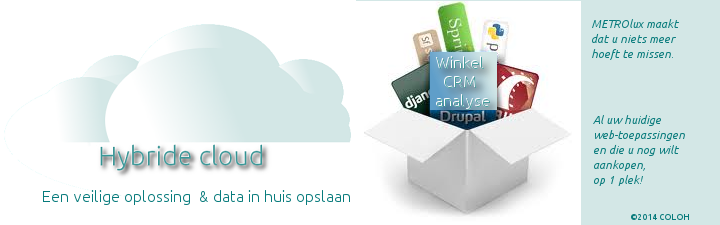
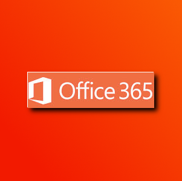

METROlux Webapps
METROlux PRO CLOUD & WEB applicaties

NU METROlux PRO versie bestellen

U KUNT HIER UW GRATIS ACCOUNT BIJ MICROSOFT AANMAKEN EN DIRECT GEBRUIK MAKEN VAN OFFICE 365 ONLINE.
VOLG DEZE stappen om gebruik te kunnen maken van MS Office online.
-1- Maak een account aan bij Microsoft
-2-Klik op: One Drive “Sign In”
Start hier de webbased Microsoft kantoor applicaties.
BELANGRIJK!+++++NIET dubbel klikken maar rechtsklikken en link openen.
HOWTO”